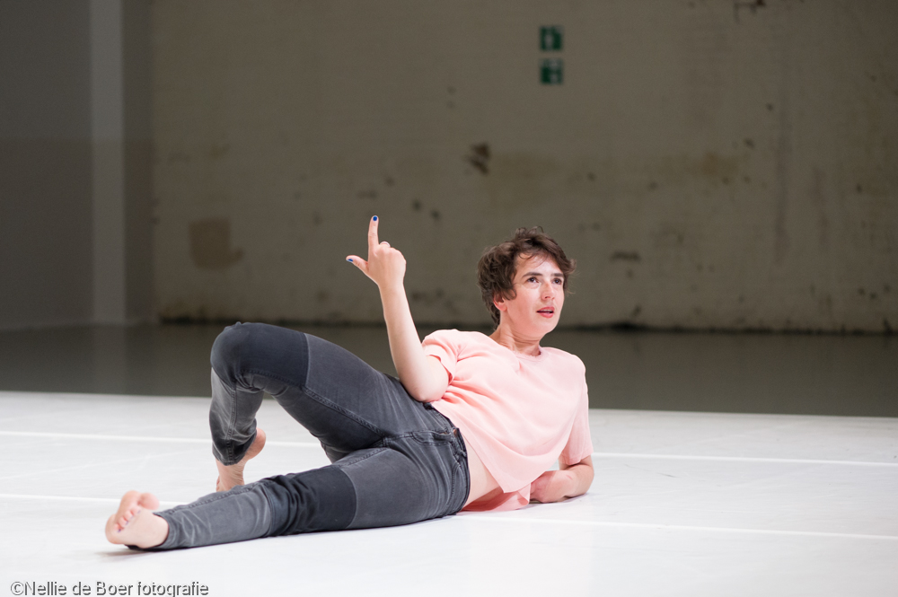

Togethering, a group solo 
photo Damir Žižić Togethering, a group solo' embraces dance as an expression, a social activity and a collective process. Presenting us with a series of proposals in which dance is both a means and an end to togetherness, it includes a lecture on speech and agreement within groups, a telepathic dance and a poetry reading. Alice Chauchat shares some aspects of the collective imagination she practiced over the past 15 years in the field of dance and choreography. They are stories about co-existing and about sharing. While remaining in their formal territories (spectators watching, dancer dancing), performer and audience share roles: assistant, companion, collaborator or host, as protagonists of the theatrical event. Considering our shared time/space both as a reality and as a projection space for other occasions of coming-together, it is an invitation to address those occasions as experiments that are each time re-formulated and that we invent together. Read more about the dances in the piece here
Credits Dance, text, performance: Alice Chauchat Production: Alice Chauchat, with the support of the Theaterschool (Amsterdam) Thanks to Eva Meyer-Keller, TheaterHaus Mitte (Berlin) and Eden studios (Berlin) for giving me access to their spaces. I also want to express my gratitude to the colleagues and friends who joined and nourished this process by dancing and talking with me over the last 18 months: Yves, Michael, Michelle, Günther, Sher, Jeroen, Velvet, Siegmar, Cécile, Christine, Alix, Peter, Dave, Eva, Jennifer, Silke, Ellen, Anne, Valentina, Mark, Keith, Mårten, Philippe, Raimundas, Arielle, Angela, Doug, Sara, Catarina, Ellen, Janine, Gabi, Méheli, Sarah, Thea, Sara, Mattew, Asher, Agata, Joséphine, Katharina, Rosalind, Roni, Laurie, Uri, Louise, Julia, Asaf, Xenia, Hana, Ana, Jennifer, Anne, Sonia, Elise, Alice, Zinzi, Mor, Sandhya, Stina, Agne, Leah, Antonia, Antonija, Selene, Ines, Hamish, Nicola, Amaara, Seke, Tatiana, Naomi, Martin, Cristina, Karen, Tina, David, Jamie, Kathy, Carolyn, Janine, Monique, Romany, Sophie, Andrew, Jonathan, Helka, Catherine, Meg, Greg, Eroca, David, Nichole, Patricia, Rebecca, Gabrielle, Thomas, Annie, Loren, Mairi, Tina, Meryeum, Oriah, Lo, Miruna, Ara, Amelia, Robert, Amanda, Lee, Simon, Dana, Emi, Robert, Anne, Robyn, Emma, as well as all the other, former companions whose stories I tell like fables. This work wouldn't exist without you. To watch a video, please contact me directly
|